About Me
Personal Information
- Name: Yasin Samooei
- Location: Isfahan, Iran
- Email: yasinsamooei.official@gmail.com
- Education: M.Sc. Digital Electronics
- Focus: Backend | AI | Iot
Technical Skills
Work Experience
Golang Developer
In addition, I worked on developing APIs for the store section, system communication modules, and implementing and improving Authentication & Authorization mechanisms.
Throughout these projects, I collaborated closely with different teams, including Product, QA, and Infrastructure teams. The development process followed a defined workflow, with task management handled through a dedicated Task Management system, along with testing and review processes to ensure the quality and stability of the services.
Software Developer & AI Engineer
In this role, I worked closely with Front-end, Application, and Electronics teams. In addition to software development, I was involved in areas such as sensor configuration and calibration, data acquisition from sensors, hardware communication, ARM programming, and the design of IoT-based systems.
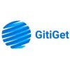
Back End Developer
Across different projects, including e-commerce platforms, corporate websites, and custom web solutions, I developed backend structures from the requirement analysis and technical business planning stages through implementation, testing, debugging, optimization, and deployment.
To improve system quality and stability, I wrote unit and integration tests using Pytest and Python testing tools, automated repetitive processes with CLI tools, and performed load testing and service performance evaluation using Locust.
In addition to technical development, I worked closely with Front-end and Application teams to ensure that communication between services, APIs, and clients was implemented in an optimized, stable, and scalable manner.
Projects
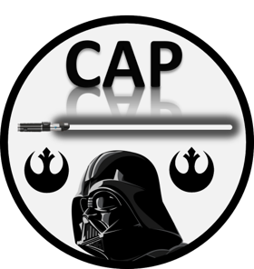
CAP Company
Designed and developed the official website of CAP Company as a fully customized platform tailored to the brand’s identity and requirements. I was responsible for the complete development process, from UI/UX design to backend implementation and database architecture design. The website operates in the cinema and animation industry and includes multiple data-driven sections.
Key features I developed:
- Movie, series, and animation streaming system with multiple categories
- “CAP Wiki” section, including a comprehensive database of characters, movies, and animation details
- Global search across all types of content, including movies, characters, articles, news, and more
- Full implementation of the articles and news sections
- Design and development of a bilingual version (Persian/English)
- Custom backend development and database architecture tailored to the project’s requirements
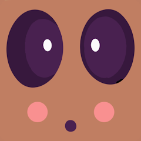
Goaleto
Goaleto is an innovative platform in the field of lifestyle and goal management, designed to provide a global user experience through multilingual support, including Persian, English, Italian, and ongoing expansion to other languages. The application enables users to define and track personal goals, build positive habits, and follow a path toward success and mental well-being through tools such as meditation, breathing exercises, and smart reminders.
In this project, I fully designed and implemented the backend of the multilingual website. I also contributed as part of the backend development team for the mobile application, where I played a key role in designing and implementing the core system APIs.
These APIs were developed for user management, authentication, goal creation and tracking, habit management, multilingual content, meditation, breathing exercises, reminders, and stable communication between the mobile application and the server.
During the development process, the main focus was on security, modular architecture, scalability, stable performance, and seamless integration with the mobile application. As a result, we built a reliable and scalable backend infrastructure capable of supporting a smooth user experience, multilingual content management, and the needs of both end users and system administrators.
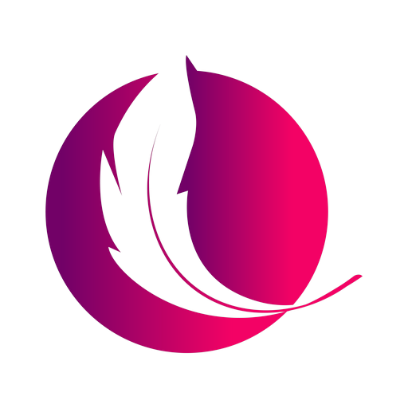
Shorkhapp
My main focus in this project was developing a stable, secure, and scalable backend capable of supporting the needs of regular users, salon managers, and the platform’s administration team. To achieve this, I designed and implemented optimized and flexible APIs that enabled fast salon search, information management, rating submission and processing, and efficient communication between different parts of the system.
One of the key parts of the project was designing the system’s multi-panel architecture. SorkhApp includes three separate panels with different access levels: a regular user panel, a super admin panel, and a salon owner panel. Each panel was customized based on the needs of its user group. Users can search, view salons, and submit ratings; salon owners can manage their salon information and services; and the super admin has full control over users, salons, content, ratings, and overall platform settings.
In terms of security and access management, I implemented an authentication and authorization system with custom access levels, ensuring that each user role could only access the permitted sections and operations. This structure provided precise access control and made it possible to extend the system with new roles and permissions in the future.
To improve system quality and reliability, I implemented various tests using Pytest. I also set up CI/CD processes to automatically run tests and perform code quality checks. In addition, load and performance tests were conducted to evaluate the system under high traffic.
Art Of Diet
This project is a specialized platform in the field of diet planning and healthy lifestyle management, designed and developed to provide users with personalized nutrition programs. Through the application, users can answer dynamic questions defined by the client or a medical specialist, and based on the submitted information, receive recommendations and plans tailored to their personal conditions, goals, and needs.
One of the key features of this system is the ability to define and manage questions in a fully dynamic way. Doctors or system administrators can create and edit questions based on the type of diet, the user’s health condition, wellness goals, and the required data for more accurate analysis. This structure made the user data collection process flexible, scalable, and adaptable to different medical and nutritional scenarios.
The admin panel was also custom-designed and developed, providing features such as user management, response review and analysis, user status tracking, diet plan control, and progress monitoring. In addition, user progress charts were implemented to visually display changes and improvement trends in a clear and understandable way.
Another important feature of this project was the ability to generate diet plans as PDF files, allowing doctors or administrators to prepare the final plan in an official, downloadable, and user-friendly format. Additionally, a referral code and discount system was implemented to increase user engagement and support marketing campaigns, enabling users to benefit from special offers and exclusive discounts.

Movie streaming platform
Tiphub
TipHub was a free educational platform focused on programming, providing its content through standalone video tutorials. I worked alongside the professional TipHub team as a Backend Developer using Django, and also contributed to the platform as an instructor.
In addition to backend development, my responsibilities included managing content distribution channels such as Aparat, Virgool, and YouTube, as well as serving as the website administrator for TipHub.
This experience was a valuable opportunity for me to contribute both to the technical development of the platform and to the creation, management, and publication of educational programming content.
Conferences & Events
Events, Talks & Awards
Showcasing a track record of participation in national and international events, delivering specialized talks and lectures, and presenting innovative products in artificial intelligence and digital technologies. This section highlights achievements such as keynote speeches, panel discussions, and recognition for contributions to human health, environmental protection, and advanced software development.
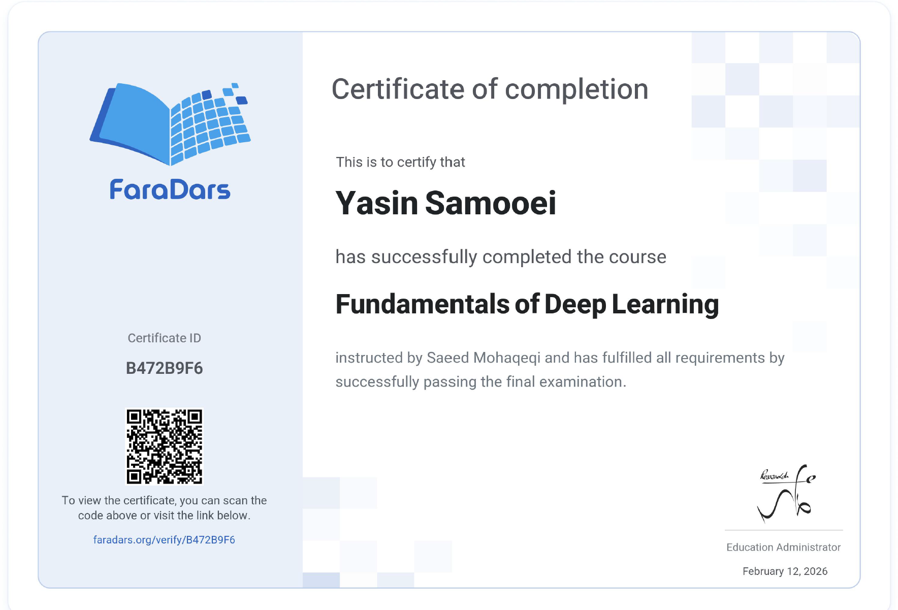
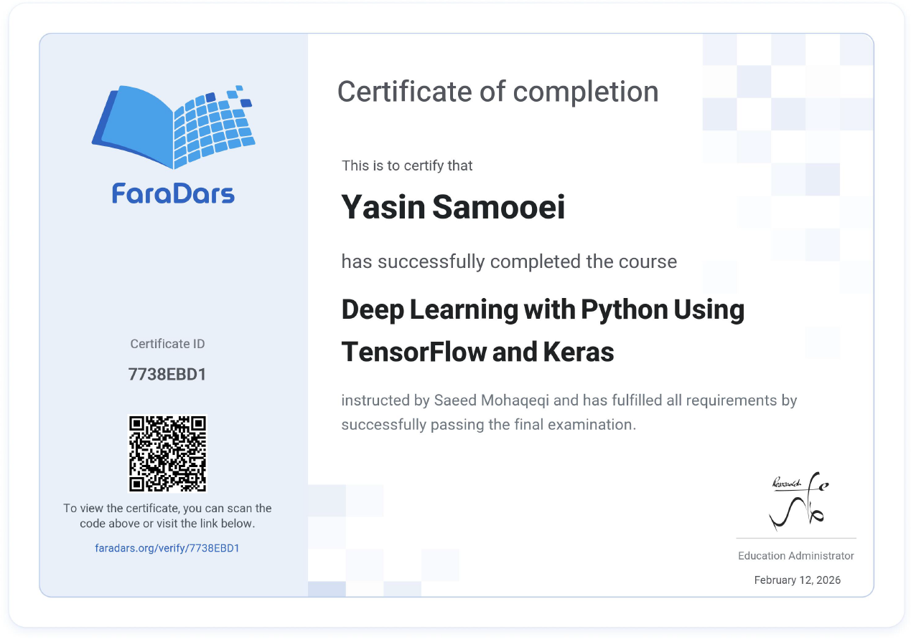
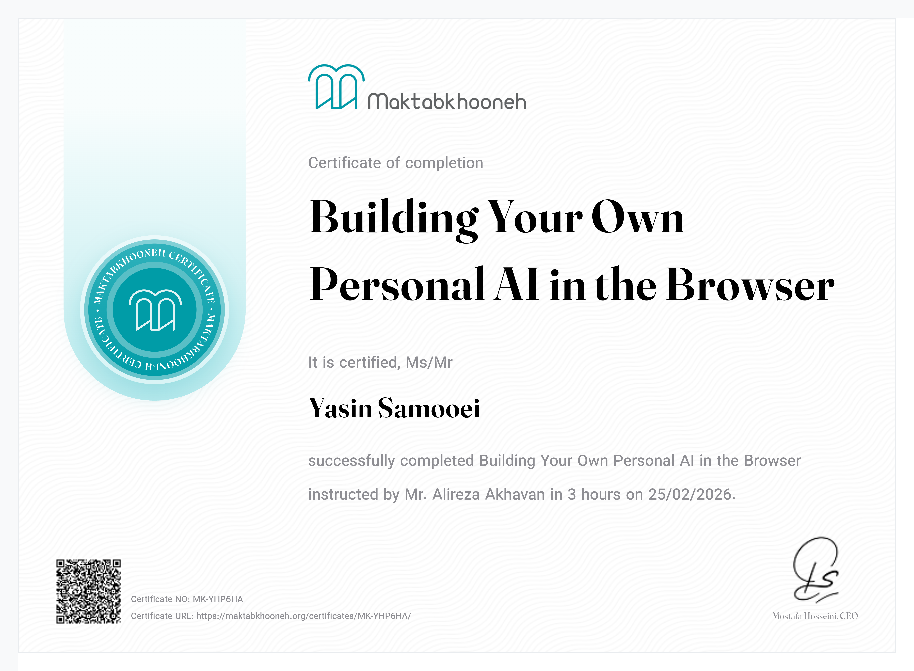
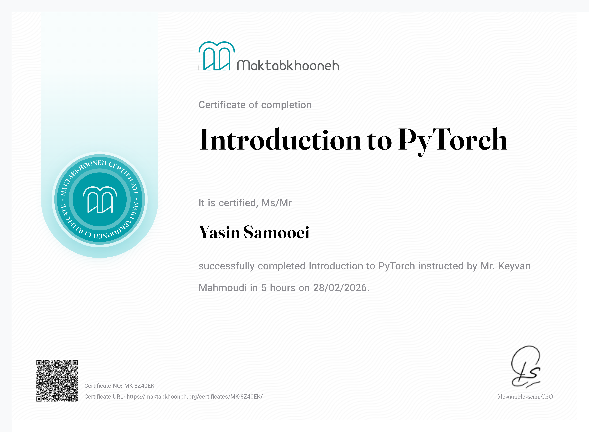
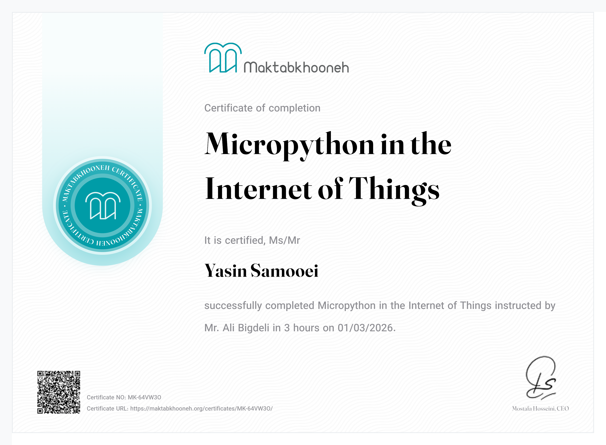
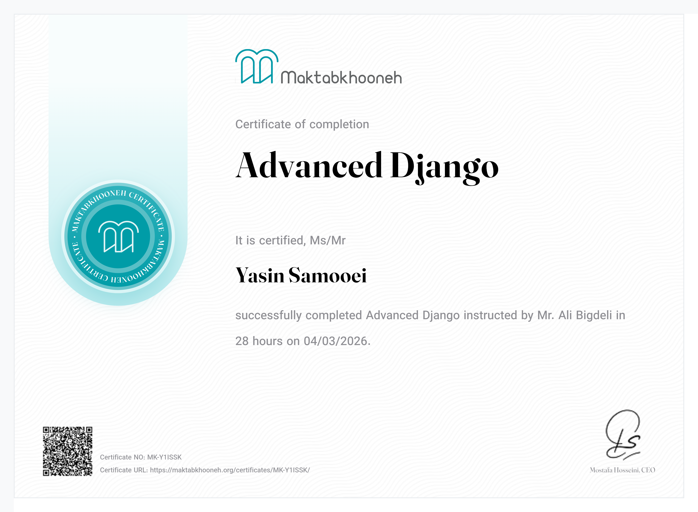
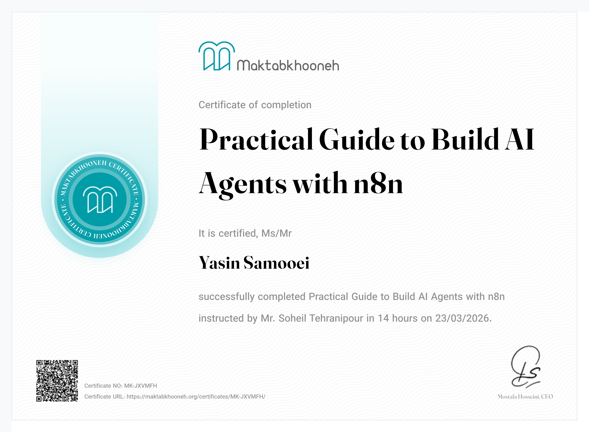
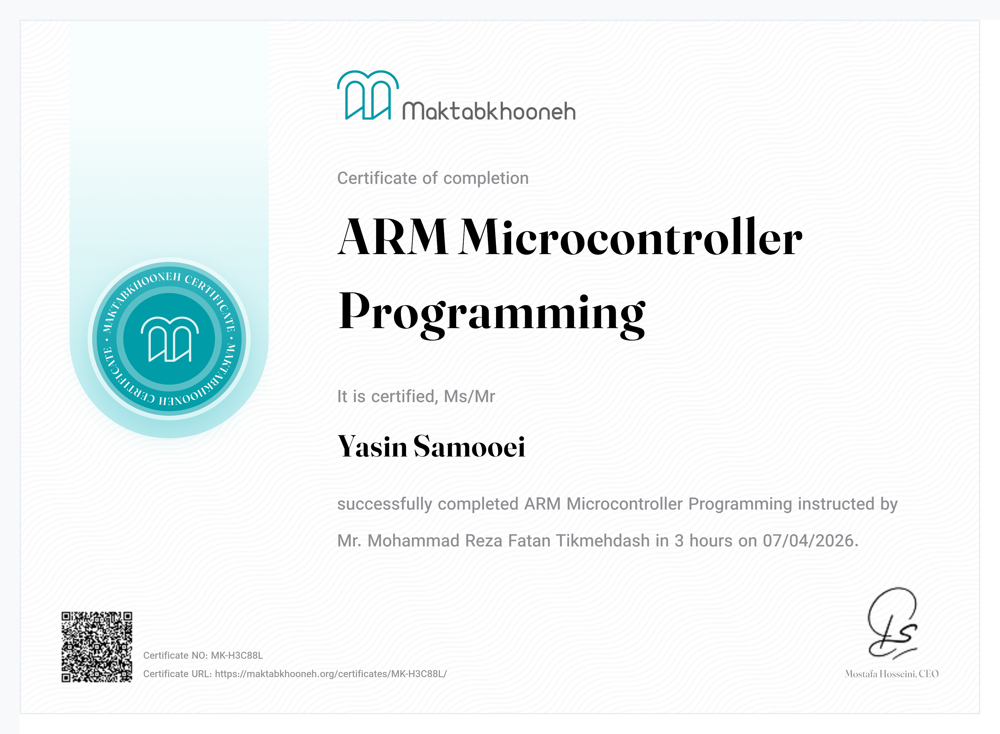
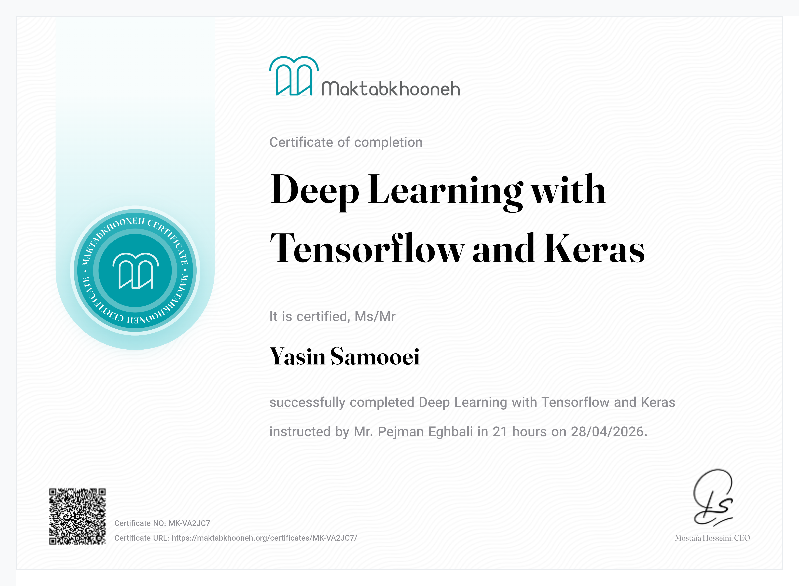
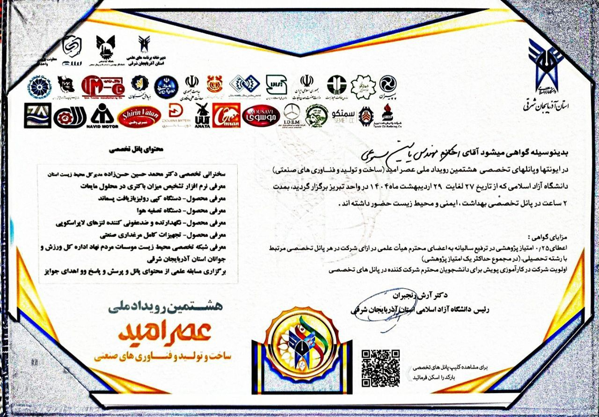
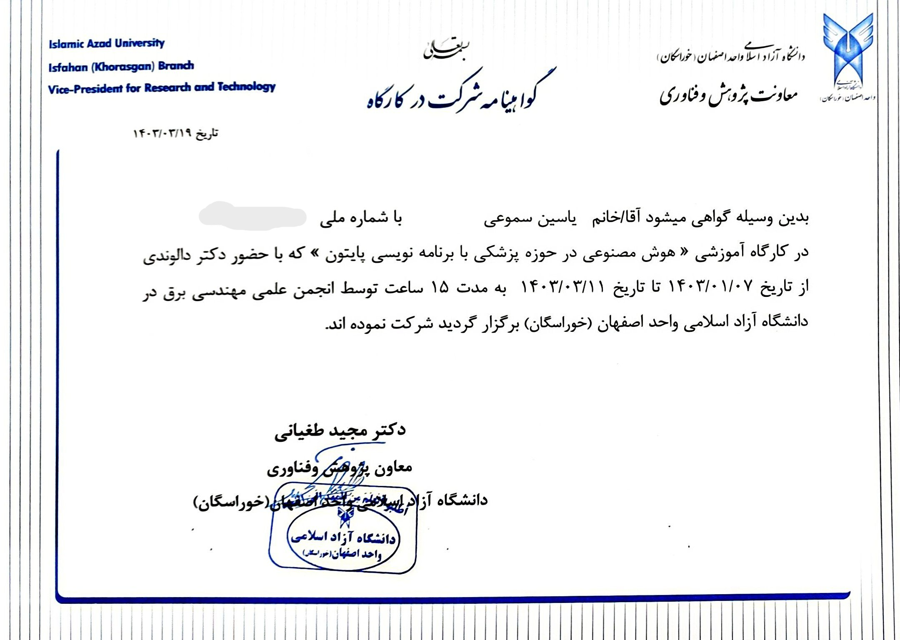
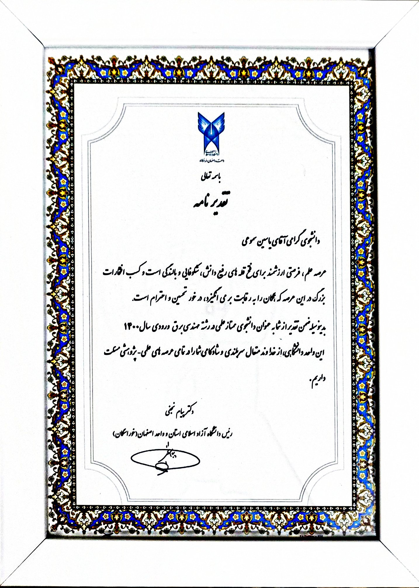
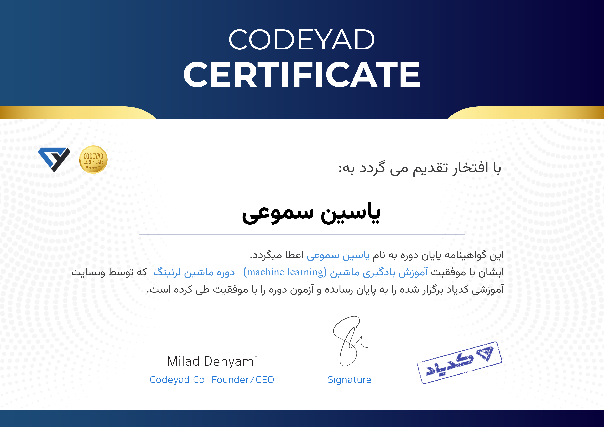
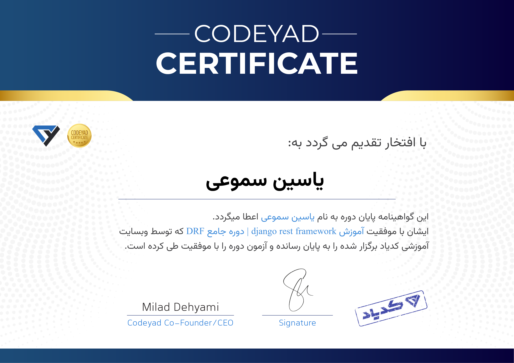
Education
M.Sc. Digital Electronics
Specialization in AI, Computer Vision (OpenCV) and Embedded Systems for IoT applications.